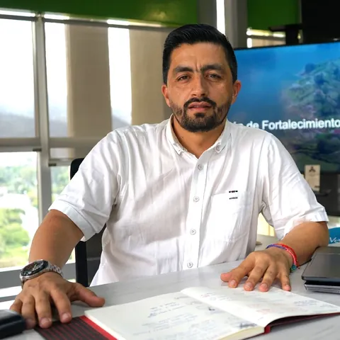
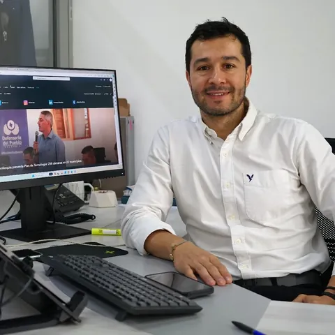
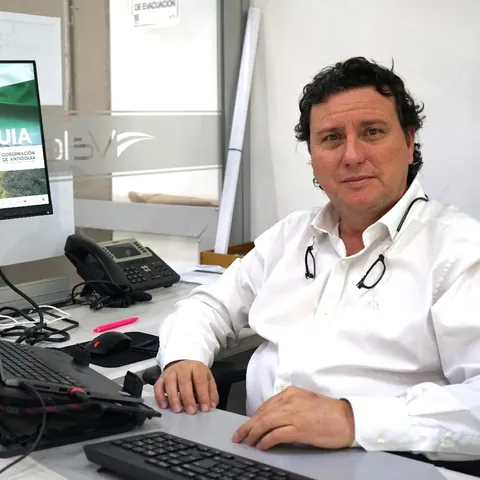
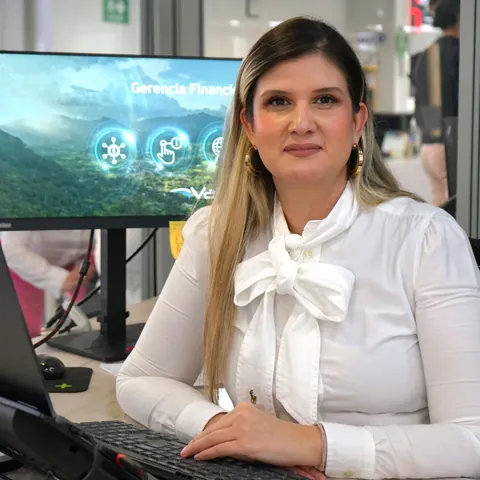
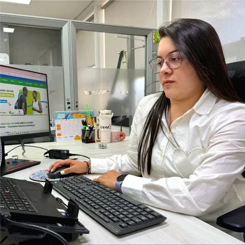

Estrategias tecnológicas del recaudo
Estrategias tecnológicas del recaudo Automatización de la información
Automatización de la información Estructuración y gerenciamiento de proyectos
Estructuración y gerenciamiento de proyectos Soluciones tecnológicas y consultoría especializada
Soluciones tecnológicas y consultoría especializada Seguridad
Seguridad Soluciones energéticas en tecnologías limpias
Soluciones energéticas en tecnologías limpiasSobre nosotros
Trabajamos de la mano para brindarte soluciones tecnológicas
Habilitador y acelerador de procesos y arquitecturas de solución que fortalecen la cadena de valor público y acercan sus servicios al ciudadano.
Nuestro propósito
Misión
Creadores e integradores de soluciones basadas en tecnología y procesos, que contribuyen a la generación de valor en las empresas y entidades públicas, facilitando su transformación digital y contribuyendo a un futuro inclusivo y sostenible.
Lo que buscamos ser
Visión
Para 2027, seremos un referente en la integración de soluciones tecnológicas y sostenibles en la gestión pública. Transformaremos el sector público mediante tecnologías avanzadas y prácticas innovadoras que mejoren la eficiencia, la transparencia y el servicio a la ciudadanía.
Cultura
Nuestros valores
Compromiso
Innovación
Excelencia
Calidad humana
Desde el ser
- Honestidad: Actúo siempre con fundamento en la verdad, cumpliendo mis deberes con transparencia y rectitud, y siempre favoreciendo el interés general.
- Respeto: Reconozco, valoro y trato de manera digna a todas las personas, con sus virtudes y defectos, sin importar su labor, su procedencia, títulos o cualquier otra condición.
- Compromiso: Soy consciente de la importancia de mi rol dentro de la compañía y estoy en disposición permanente para comprender y resolver las necesidades de las personas con las que me relaciono en mis labores cotidianas, buscando siempre mejorar su bienestar.
- Diligencia: Cumplo con los deberes, funciones y responsabilidades asignadas de la mejor manera posible, con atención, prontitud, destreza y eficiencia, para así optimizar el uso de los recursos del estado.
- Justicia: Actúo con imparcialidad garantizando los derechos de las personas, con equidad, igualdad y sin discriminación.
Desde el hacer
- Orientación al servicio y el resultado: Vamos más allá de lo que nuestros clientes requieren, anticipándonos a sus necesidades y entregando resultados superiores.
- Efectividad, oportunidad y eficiencia: Buscamos el camino óptimo de llegada a un objetivo, haciendo las cosas de forma eficiente.
- Integralidad (360°): Consideramos diferentes alternativas de solución, desde la tecnología, experiencia del usuario, uso y la practicidad de su implementación.
- Ciudadanía: Vemos e implementamos la modernización del estado desde nuestra perspectiva como ciudadanos.
Diferenciales
Por qué elegirnos
Orientación al servicio y el resultado
Vamos más allá de lo que nuestros clientes requieren, anticipándonos a sus necesidades y entregando resultados superiores.
Efectividad, oportunidad y eficiencia
Buscamos el camino óptimo de llegada a un objetivo, haciendo las cosas de forma eficiente.
Integralidad (360°)
Consideramos diferentes alternativas de solución, desde la tecnología, experiencia del usuario, uso y la practicidad de su implementación.
Liderazgo
Equipo principal

David QuinteroGerente General- Luisa Fernanda EcheverriSecretaria General

Hernán EchavarríaGerente de Tecnología, Innovación y Sostenibilidad
Carlos EcheverriGerente de Operaciones
Paula Andrea Toro TorresGerente Financiera
Vanessa Urrea GalloDirectora de Infraestructura- Carolina Gómez JiménezDirectora Comercial
- Andrea Monsalve FrancoDirectora Administrativa
Plan estratégico
Objetivos estratégicos
OE 1 · Fortalecer la gobernanza para mejorar la transparencia, eficiencia y eficacia.
A través de este objetivo se busca establecer un marco de gestión robusto que garantice la toma de decisiones basada en datos y estadísticas, la rendición de cuentas a los entes de control y a los grupos de valor, y la alineación de los recursos con los objetivos corporativos a través de la implementación de estrategias y procedimientos claros, así como la adopción de tecnologías propias de gestión avanzadas. Este objetivo pretende fortalecer la transparencia en todas las operaciones, optimizar el uso de los recursos y asegurar que todas las áreas de la organización trabajen de manera articulada y efectiva hacia el logro de los objetivos estratégicos.
OE 2 · Articular la gestión institucional y el modelo organizacional para aumentar la productividad operativa.
Este objetivo se centra en la optimización de los procesos internos y la estructura organizacional para lograr un rendimiento superior. Este objetivo busca redefinir el modelo organizacional para eliminar reprocesos, mejorar la coordinación entre las áreas, transversalizar las acciones de todas las áreas que componen la organización y aprovechar las tecnologías innovadoras desarrolladas con capacidades propias que permiten automatizar tareas y reducir los costos operativos. Al alinear los recursos y capacidades de la organización con sus prioridades estratégicas, se espera mejorar significativa- mente la eficiencia y eficacia en la entrega de servicios, al tiempo que se maximiza la rentabilidad y se disminuyen los gastos operativos innecesarios.
OE 3 · Aumentar la sostenibilidad financiera a través de la diversificación de ingresos y la optimización de costos.
A través de la diversificación de ingresos y la optimización de costos se busca garantizar la estabilidad económica y el crecimiento a largo plazo de la organización. Este objetivo busca diversificar las fuentes de ingresos mediante la exploración de nuevos mercados, productos y servicios, reduciendo la de- pendencia de ingresos tradicionales para diversificar la base de ingresos, mientras se optimizan los procesos financieros y operativos para eliminar ineficiencias. Al equilibrar el crecimiento de ingresos con una gestión financiera prudente, se pretende construir una base sólida que permita a la organización mantener su viabilidad financiera y capacidad de innovación.
OE 4 · Mejorar la experiencia del cliente y aumentar la satisfacción para fomentar la lealtad y el crecimiento del negocio.
Este objetivo se enfoca en poner al cliente en el centro de todas las operaciones, asegurando que cada interacción con la empresa sea positiva y aporte valor. Busca a través de la personalización de servicios, la optimización de los canales de comunicación y la respuesta proactiva a las necesidades y expectativas de los clientes, buscando no solo elevar los niveles de satisfacción, sino también construir relaciones duraderas que promuevan un vínculo cercano con el cliente. Este enfoque contribuye directamente al crecimiento del negocio, ya que los clientes satisfechos son más propensos a mantener relaciones a largo plazo y recomendar los servicios a otros, impulsando así el éxito sostenido de la empresa.
OE 5 · Consolidar a Valor+ como el principal aliado en el desarrollo e innovación tecnológica para el sector público en el departamento de Antioquia.
Desarrollar e implementar soluciones tecnológicas avanzadas que posicionen a la empresa como líder en la transformación digital del sector público, siendo pioneros en la implementación de soluciones basadas en inteligencia artificial, analítica de datos y ciberseguridad.